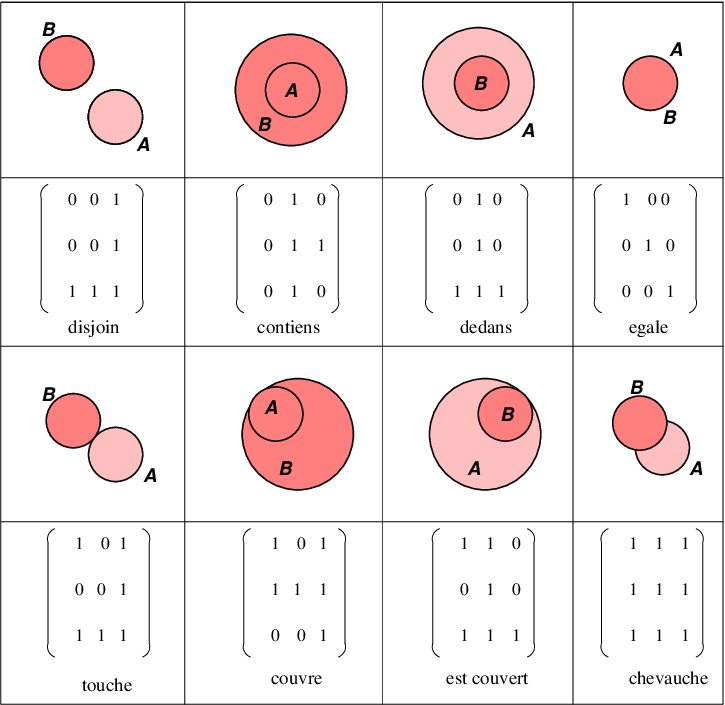
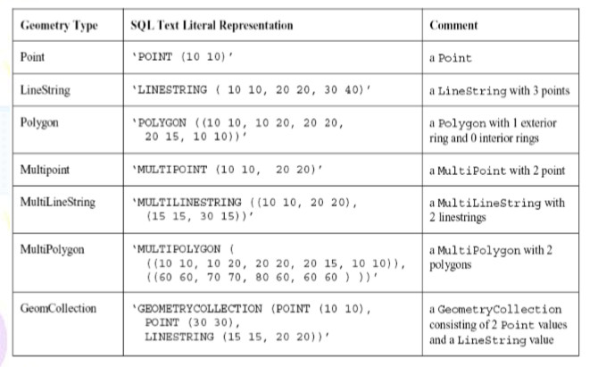
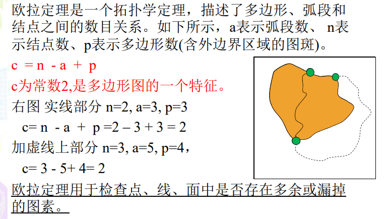
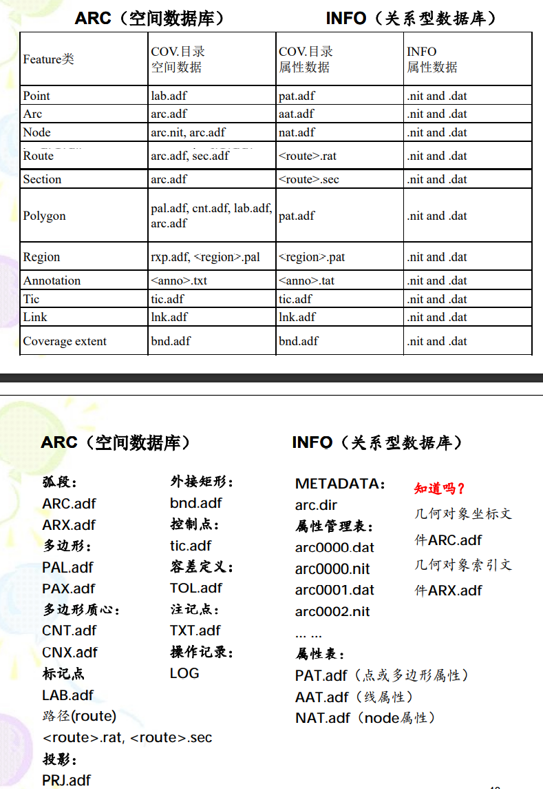

# GIS数据模型
基于对象（OBJECT-BASED)
用于表示可精确描述出位置或边界的地物及其特征
基于域/场(FIELD-BASED)
用于表示地学现象的连续分布特征或者变化
基于网络(NETWORK-BASED)
现实世界到GIS的空间变化：
# 矢量数据模型
解决几何对象，空间关系和拓扑关系计算机表达问题
# 基于面向对象模型
# OGC简单要素模型（Simple Feature）
基本概念：
在GIS中，地物是用Feature（要素）描述与表达的。通俗地讲， 一个Feature就是空间数据文件（或数据库）中的一条记录， 含几何对象和属性数据。前者表示地物的位置、边界等，后者 表示地物的属性，如：长度、面积、土地利用类型等。
Feature基本分类和表达
基本几何对象：
- 点：代表一个点实体、维数为0，如村庄、钻孔等。
- 线：代表一个线实体、维数为1，如河流、道路等。
- 面：代表一个多边形实体、维数为2，如湖泊、宗地等。
复合几何对象：
- multiPoint：
- multiLineString
- multiPolygon
- geometry collection
Feature空间关系判断
九交模型（DE-91M）
九交模型（Dimensionally Extended 9 Intersection Model）是一种数学方法，定义了两个几何对象之间的空间关系。
空间关系的判断，是通过比较两个几何对象之间的坐标 （X,Y）实现的，目前仅适用于平面坐标，Z坐标值将被忽略。
- 八种基本空间关系
- Equal（相等）：两个几何图形具有相同的边界和内部。
- Disjoint（分离）：两个几何图形的边界和内部不相交。
- Intersects（相交）： 两个几何图形没有分离(Non-DisJoint)。
- Touch：（接触）： 两个几何图形的边界相交，但是内部不相交。
- Overlay（覆盖）：两个几何图形的边界和内部相交(Intersect)。
- Cross（交叉）：个几何图形的内部和另一个几何图形的边界和内部相交，但是它们的边界不相交。
- 八种基本空间关系
Within（包含于）：一个几何图形的内部和边界完全在另一个几何图形的内部。
- Contains（包含）：个几何图形的内部完全包含了另一个几何图形的内部和边界。
辅助理解基本知识
空间维：
null or nil (-1)
point (0), linearstring(1), polygon (2)
multipoint (0), multilinearstring(1), multipolygon(2)
最短距离：笛卡尔坐标系坐标系|曼哈顿距离
几何求交：A∩B
几何差：(A-B)
几何对称差：(A-B)∪(B-A)
给定几何体 a和b， I(a), B(a), E(a)分别表示a的内部、边界和外部，I(b), B(b), E(b) 表示b的内部、边界和外部。

a和b相交生成3x3矩阵：

dim为维度；
DE-9IM模型中，每类空间关系都有着其特定的矩阵模式（matrix pattern) ：
T -An intersection must exist; dim = 0, 1, or 2.
F -An intersection must not exist; dim = -1.
- *-It does not matter if an intersection exists or not.
- 0 -An intersection must exist and its maximum dimension must be 0
- 1 -An intersection must exist and its maximum dimension must be 1.
- 2 -An intersection must exist and its maximum dimension must be 2
数据格式
ArcView Shape文件
- .shp：几何对象（多边形）的空间坐标文件
- .dbf：几何对象的属性文件（数据库格式）
- .shx：索引文件，将shp和dbf内的记录对应起来
- .prj：投影信息
工具：OGR，SHAPELIB库
（python Lib：GeoPandas，shapely，pyshape）
OGC WKT/WKB（用于Oracle，PostgerSQL等空间数据库）

# GEOJSON/BJSON（用于MongoDB NoSQL等数据库）
参考：http://geojson.org/geojson-spec.html
# GML（geography markup language，用于OGC WFS服务等）
# 基于拓扑数据模型
拓扑学研究在拓扑变换下能够保持不变的几何属性，拓扑属性。
地图上的拓扑关系是指图形的形状、面积会随图形改变而发生变化，但各几何对象之间的邻接关系、关联关系、包含关系则不会改变。
因此，拓扑关系也称为绘在橡皮上的图形关系，是空间关系（拓 扑关系、方向（方位）关系、度量关系）的一种。
欧式平面上的典型拓扑概念：
- 连接性：表示弧段在结点处的相互联接关系。
- 多边形：多个弧段首尾相连，构成了多边形的内部区域。
- 领接性：通过弧段的方向性，可以判断弧段左右两个多边形的邻接关系。
# 拓扑空间关系：
- 拓扑领接
- 拓扑关联
- 拓扑包含
# 拓扑数据结构：
- 双重独立式编码
- 点文件：存储每个点，包括点号，x坐标和y坐标
- 线段文件：存储由点号组成的线段，包括线段号，起点，终点，左多边形和右多边形
- 多边形文件：存储由线段号组成的多边形，包括线段列表
- 链状双重独立式编码
- 结点文件（Node）：存储每个节点，包括结点号，结点x坐标，y坐标
- 弧段坐标文件（ARC）：存储由弧段组成的每个弧段，包括弧段号，坐标串
- 弧段文件（Topology）：存储由弧段坐标组成的弧段，包括弧段号，起点，终点，左右多边形
- 多边形文件：存储由弧段组成的多边形，包括多边形号和弧段号
# 拓扑关系检验：欧拉定理
# ARCINFO COERAGE数据组织（基于拓扑模型）
# 基于规则的数据模型
基于规则的数据模型，采用一种层次结构的数据组织方式来管理 一个空间数据集合，同时存储着多个图层数据。在实际应用中， 根据专题特征，建立了同类地物之间、不同类地物之间的关联规 则或者约束规则。
例如：
- 行政区图（多边形图层） - 各多边形之间是不能够有重叠的、多边形之间也没有空隙。
- 等高线图（线图层） - 等高线之间是不能够相交的
# 栅格数据模型
# 场模型（Field）
场模型：常用于表示地物或者地学现象在地理空间中的连续变化分布
- 表层土壤PH值的空间变化
- 地表高程的起伏变化
- 大气污染物的空间浓度分布
特点：
- 连续变化（渐变的）
- 各向同性/各向异性
- 空间相关性/空间异质性
场模型，在计算实现称为栅格模型（Raster）
其实质是对连续空间分布现象的离散化或者规则采样
像元形状选择：正方形面元是GIS和遥感最常用的离散化（或采样）方式！

# 对场模型的实现
栅格数据模型实质上是对连续空间分布现象的离散化，采用了一个二维矩阵，使用行号与列号来确定每个像元点（cell）的空间位置
- 数据矩阵：像元值用于表示地物某种属性的数值，像元大小表示栅格的空间分辨率，波段则表示地物属性由多类，每类属性用一个波段表示。
- 大地坐标：空间数据参考表示地图投影信息，仿射变换表示行列坐标到平面坐标的映射。
# 栅格文件格式：
栅格文件的内置头文件
内含大地坐标系系统的定义和几何变换矩阵参数
- ARCINFO GRID，GeoTIFF，HDF，IMG等
栅格文件的外置WORLD FILE
无空间参照，仅有放射变化矩阵6个参数；
- 数据矩阵文件+world文件，无投影：
- TIF+TFW，JPG+JGW，BMP+BPW，PNG+PGW
- 数据矩阵文件+多个文件头：
- GTOPO30，FTOPO5，SRTM DEM
- 数据矩阵文件+world文件，无投影：
# 栅格数据压缩
压缩（编码）目的是解决栅格数据的数据冗余
游程，分块，四叉树等均为无损压缩
- 有损压缩：数据恢复后，有些信息丢失
- 无损压缩：数据恢复后，信息完整
# 栅格扫码顺序
本质是降为，转为一维数据进行压缩或编码处理
行序列
行主序列
Morton序列
Hilbert序列
# 逐像元编码
相当于无压缩
# 游程编码（常用）
游程编码是栅格数据的一种比较简单的保真压缩编码方法。
编码中，将栅格阵列中具有相同属性值的邻近单元合并在一起，构成一个游程。 **每个游程使用一对数字来表示(A,P)，其中A代表属性值或属性值的指针，P 表示该游程最右端栅格的列号。(注:还有一种游程编码P是行程的长度即重复单元的个数)。 **

# 分块编码

col：起始位置的行
row：起始位置的列
size：方阵的维度
lab：方阵的属性
例如0，0，2，0；第1列，第1行，2*2，值为0
# 四叉树编码
四叉树压缩编码（Quarter-tree Encoding）的基本思路为：将一幅栅格图像或地图四等分，逐块检查每块的属性值是否一致，再对属性值不均一的块四等分，再逐块检查其属性值的一致性，以此类推，直至每个子块的属性值均一为止。
关于Morton序列
四进制表达；Z字型顺序

自上而下（递进分割）法：

自下而上（递归合并）法:

M码的计算：

# 细分网格法编码
# 矢量，栅格和TIN的比较

# 矢量向栅格转换
尽管矢量数据具有数据量小且精度高的优点，但在实施空间分析时，往往不及栅格数据方便。
地理信息系统中，一般两种数据结构并存。
根据应用需求，两种数据可以进行格式转换，以满 根据应用需求，两种数据可以进行格式转换，以满足空间操作对数据格式和应用建模的需要。
操作步骤：
确定栅格单元的大小

转换后栅格的行，列数的计算

空间类型转换
点转换

线的转换

面的转换

# 栅格向矢量的转换
# 骨架法
V值图
问题，原本不是对象的栅格点，转为了对象的栅格点
最大圆盘法
基于形态学腐蚀和膨胀实现
# 细化法
- 塞拉变换